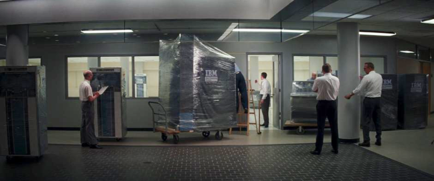
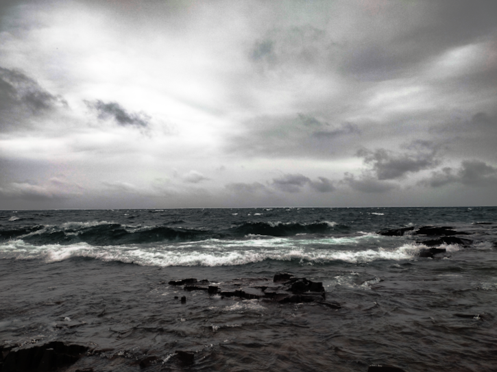

Art taken from Ian Henderson. See this article.
🟄 . . . code is math is code is math is code is math is code is math . . .

The new computer doesn't fit through the door scene from the film Hidden Figures.
Learning math and learning programming/computer science should happen simultaneously. Click on the icon top-left and get started.
🟄 About

The Inland Sea aka Lake Superior.
codeismathiscode is located in Grand Marais, Minnesota, USA, on the coast of the Inland Sea, aka, Lake Superior. Reach us at codeismathiscode@gmail.com